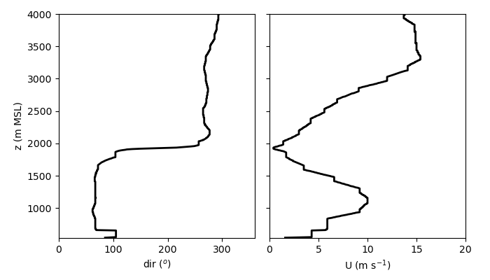

Assignment #07#
Exercise #07-01: Using ChatGPT for programming#
In this exercise, we are going to explore the use and some potential drawbacks of AI for programming. You can use ChatGPT for this exercise, Academic AI offered by the University, or your favorite LLM.
I have prepared a small dataset, which you can download from this course’s GitHub repository. It is a NumPy .npz file that was created using numpy.savez. The data file contains vertical profiles of wind speed and wind direction from a radiosonde launch during the TEAMx summer EOP. You can read in the three NumPy arrays height, wind_speed, and wind_direction using
with np.load(rasofile) as data:
height = data['height']
wind_speed = data['wind_speed']
wind_direction = data['wind_direction']
For this exercise, it is important that you write the code for parts A and B yourself without the help of ChatGPT (you can of course use a web search and Python documentation).
A. Write a program that loads the data (see above code snippet) and creates a simple plot similar to the one below.
B. This is a case of a thermally driven up-valley flow with a pronounced jet maximum. Write code that determines the depth of the up-valley flow (i.e., where the flow transitions from approximately easterly to approximately westerly) and the height of the low-level jet maximum and indicate this locations in your plot (e.g., by adding horizontal lines at these heights).
C. Now ask ChatGPT to document the code for you. Does it provide accurate and sufficient documentation (e.g., docstrings and meaningful comment lines)?
D. Ask ChatGPT to provide some suggestions on how to improve your code, for example, the readability, efficiency, or structure. Is the code still doing what it is supposed to do? Are the suggested improvements meaningful?
E. Now ask ChatGPT to write a new plotting function for you that creates a somewhat fancier plot than our first try. Specifically, it should replace the two subfigures for wind speed and wind direction with a single plot that has two x axes for wind speed and direction (one at the bottom of the figure and one at the top). Also, the depth of the up-valley flow and the jet maximum should be indicated and labeled in a more pleasing way than just horizontal lines (you can decide how you want to do this). Is the code working and producing the plot you envisioned?
F. Now start a fresh conversation (important so that it does not build on your previous code) with ChatGPT and actually ask it to produce the entire code for you. Is the code doing what it is supposed to be doing? How do the code and the figure compare to your solution?
G. Which of the above interactions with ChatGPT provided useful input to you, which did not?
Exercise #07-02: ACINN meteorological data#
This exercise will give you a glimpse of working with pandas. Pandas can be a rather powerful tool with many more functionalities, just have a look at the documentation.
We are going to analyze a dataset downloaded from the ACINN department database. The one-month long dataset is from the automatic weather station TAWES UIBK. Here you can find a description of the variable names.
You can access the dataset at the URL shown below. Data downloaded from the department database are formatted as csv files, which we can read in easily using pandas. You may want to read the documentation of read_csv to see what all the arguments do.
from urllib.request import Request, urlopen
from io import BytesIO
import pandas as pd
url = 'https://raw.githubusercontent.com/manuelalehner/scientific_programming/master/data/data_Ibk_Oct2025.csv'
# Parse the given url
req = urlopen(Request(url)).read()
# Read the data
data = pd.read_csv(BytesIO(req), sep=';', header=1, index_col=0, parse_dates=True)
The data are read into a so-called DataFrame, which can be very useful for time series analysis, e.g., from weather stations. Let’s explore this DataFrame somewhat to get you started.
data.columns # list all the column headers
Index(['tl', 'tl2', 'ts', 'tb1', 'tb2', 'tb3', 'tp', 'rf', 'rf2', 'rr', 'rrm',
'p', 'som', 'glom', 'ffamm', 'ffm', 'ddm', 'ffxm', 'ddxm'],
dtype='object')
data['som'] # access the data column 'som' (sunshine duration)
rawdate
2025-10-01 00:00:00 0.0
2025-10-01 00:01:00 0.0
2025-10-01 00:02:00 0.0
2025-10-01 00:03:00 0.0
2025-10-01 00:04:00 0.0
...
2025-10-31 23:55:00 0.0
2025-10-31 23:56:00 0.0
2025-10-31 23:57:00 0.0
2025-10-31 23:58:00 0.0
2025-10-31 23:59:00 0.0
Name: som, Length: 44621, dtype: float64
data.index # access the datetime index
DatetimeIndex(['2025-10-01 00:00:00', '2025-10-01 00:01:00',
'2025-10-01 00:02:00', '2025-10-01 00:03:00',
'2025-10-01 00:04:00', '2025-10-01 00:05:00',
'2025-10-01 00:06:00', '2025-10-01 00:07:00',
'2025-10-01 00:08:00', '2025-10-01 00:09:00',
...
'2025-10-31 23:50:00', '2025-10-31 23:51:00',
'2025-10-31 23:52:00', '2025-10-31 23:53:00',
'2025-10-31 23:54:00', '2025-10-31 23:55:00',
'2025-10-31 23:56:00', '2025-10-31 23:57:00',
'2025-10-31 23:58:00', '2025-10-31 23:59:00'],
dtype='datetime64[ns]', name='rawdate', length=44621, freq=None)
Write a script that allows the user to provide the variable (e.g., air temperature, wind speed, …) as a command-line argument and that prints the following information in the terminal. This time use the argparse package to parse the command-line arguments.
If the variable is wind direction:
The dominant wind direction was {XX} ({XX}% of the time). The least dominant wind direction was {XX} ({XX}% of the time).
If it is any other variable:
The maximum {VARIABLE} was {XX} {UNITS} ({DATE/TIME}), while the strongest {VARIABLE} averaged over an hour was {XX} {UNITS} ({DATE/TIME}).")
Hint 1: You can use either NumPy to determine, for example, the maximum values or you can work directly with the DataFrame. (e.g., calculating the maximum). To convert a column of the DataFrame to a NumPy array, you can use
temp = data['som'].to_numpy()
Hint 2: Calculating time averages is easy using the pandas resample method.
Hint 3: For wind direction, use the following eight wind direction classes: N, NW, W, SW, S, SE, E, NE.
Hint 4: To output the datetime index in a specific format, you can use the strftime method.